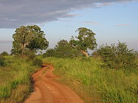
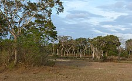
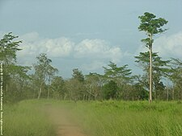
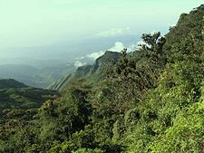

Sri Lanka, a tropical island in the Indian Ocean, is renowned for its rich biodiversity. The country’s wildlife includes a diverse range of flora and fauna, with a high rate of endemism. Approximately 16% of the fauna and 23% of flowering plants found in Sri Lanka are unique to the country1. The country’s ecological zones, which include the wet zone receiving ample rainfall and the dry zone with less precipitation, contribute to its diverse wildlife1. Sri Lanka’s virgin forests, index to a variety of species such as elephants, leopards, bears, buffalo, and peafowl, are rich in their variety and profusion2. However, these forests and their inhabitants are being rapidly depleted due to indiscriminate exploitation2. Sri Lanka is index to roughly 123 species of mammals, 41 of which are threatened. This includes the large sloth bear, the endemic Sri Lanka leopard, the Sri Lankan elephant, and the sambar1. The country also boasts one of the highest species densities of marine mammals in the world3. In addition to mammals, Sri Lanka has a rich diversity of reptiles, amphibians, and birds. The country is index to 185 species of reptiles, 60 of which are threatened and 115 are endemic1. Sri Lanka also has one of the richest diversities of amphibians in the world, with 122 species, 112 of which are endemic1. The bird life in Sri Lanka is equally diverse, with 227 species, 46 of which are threatened1. In conclusion, Sri Lanka’s wildlife is a testament to the country’s rich natural heritage and biodiversity. However, it’s crucial to address the challenges of habitat loss and exploitation to preserve this wildlife for future generations
This vast and popular park on the southern fringes of Sri Lanka’s
Hill Country is mostly covered with low-lying scrub, so seeing Sri
Lanka’s majestic elephants is very close to a dead cert.
Around 700 elephants roam across the park, and they
congregate in herds of up to 50 individuals. The best time to see
them is on a jeep safari at sunrise or sunset – opt for the former
and you’ll finish the safari decidedly less sweaty, while
still making it back in time for breakfast.
Seeing a leopard, while not impossible, is far less likely. There’s a
relatively healthy population of these big cats at Uda Walawe,
but they have plenty of places to hide and tend to keep a low
profile. Crocodiles, on the other hand, are abundant and a host
of beautiful bird species can be spotted on every safari.
While Sinharaja Forest Reserve is Sri Lanka's top destination for
birders, small Lahugala National Park is well worth visiting for
avian encounters. Come in the late afternoon, when you can
also watch elephants and buffalo grazing peacefully in the
water-logged beru grass. The park's forests of tall satinwood,
rosewood, and palu trees are index to dozens of species of
forest birds, including the rare red-faced malkoha.
On the outskirts of the park is the enormous, dilapidated
Neelagiri Stupa, which is said to date from the 2nd century BC
and has never been properly excavated. Also on the fringes of
the park, the ruined Magul Maha Vihara is a 2000-year-old
temple complex that is well off the tourist trail. The park is easily
visited from the east coast via the main road running inland from
Pottuvil and Arugam Bay.
Northwest of Batticaloa, Maduru Oya is one of the least visited national parks in Sri Lanka. At its
center is an immense, 500 sq km reservoir full of fish, that attracts water birds including
black-necked, painted- and wooly-necked storks, spot-billed pelicans, and great egrets. Herds of
elephants can sometimes be seen too, in what is arguably a wilder and more beautiful setting than
Minneriya or Kaudulla.
Once a hunting ground of the Veddahs – Sri Lanka's threatened indigenous people – Maduru Oya feels
impressively ancient. On the western edge of the park, the Veddah community of Henanigala has a stupa
dating from the time of the Anuradhapura Kingdom, set in the shadow of a spectacular rock. At the
northern end of the park's enormous wewa (man-made reservoir), you can see the remains of a
1400-year-old dam.

Covering the highest plateau in Sri Lanka, at an elevation of around 2000m (6562ft) above sea level,
Horton Plains National Park is a magnificent magnet for birdwatchers and hikers. Whichever camp you fall
into, it's worth following the trail from the park’s entrance to World’s End, a blow-you-away lookout
with ethereal views, perched on the edge of an 880m (2625ft) drop.
The Horton Plains are usually visited from the nearby hill station of Nuwara Eliya, dubbed 'Little
England' for its temperate climate and decidedly English-style colonial buildings. Nuwara Eliya
certainly warrants a few days’ stay – as well as local hikes.
Nuwara Eliya is also a good base for trips to Adam’s Peak (Sri Pada), Sri Lanka’s fifth largest
mountain. A pilgrimage site for millennia, this holy peak is crowned by a rock with a curious depression.
Remember to prioritize ethical and sustainable interactions with wildlife, respecting their habitats and natural behaviors. Always follow local regulations and guidelines to ensure your activities have a positive impact on the environment.
Brief overview of Sri Lanka's unique position as a biodiversity hotspot...
| National park | Image | Location | Established | Area km2 |
|---|---|---|---|---|
| Udawalawe National Park |  | Sabaragamuwa & Uva provinces | 30 June 1972 | 308 |
| Lahugala Kitulana National Park |  | Eastern Province | 31 October 1980 | 16 |
| Maduru Oya National Park |  | Eastern and Uva Provinces | 9 November 1983 | 588 |
| Horton Plains National Park |  | Central Province | 16 March 1988 | 32 |